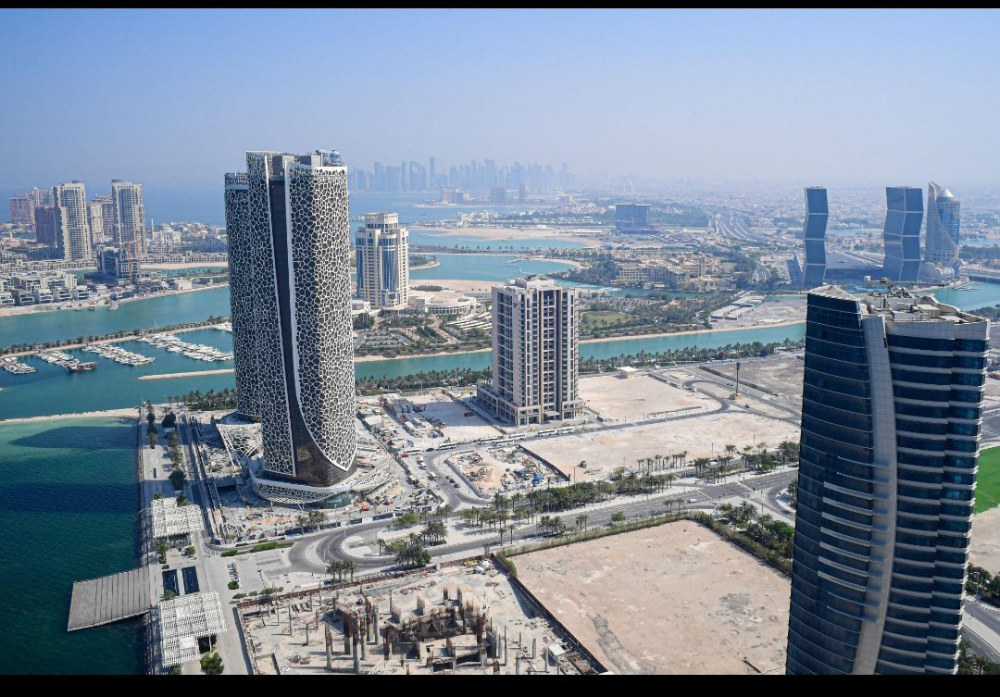

Candidate Registration
Housemaid candidates visit the agency office and provide their passport and photo at the start of the process.
Trusted household employment support
SkyBridge Foreign Employment Agency connects trained and prepared housemaid candidates with households in foreign countries through a careful, office-based recruitment and processing service.

About the agency
The agency provides information, coordination, documentation support, and placement processing for housemaids seeking foreign household employment. Candidates submit their passport and photo directly at the office. The website is informational only and does not collect uploads or online applications.
What we do
Housemaid candidates visit the agency office and provide their passport and photo at the start of the process.
Candidate details are reviewed for suitable household opportunities in foreign countries.
When a household chooses a candidate, SkyBridge supports the required employment and travel processing.
The agency coordinates the final steps before the selected housemaid travels to the assigned foreign household.


Countries
SkyBridge works with household employment opportunities in these foreign country destinations through the agency's office-based process.


How it works
The candidate comes to the office with passport and photo.
The agency prepares candidate information for household matching.
A foreign household selects a suitable housemaid candidate.
SkyBridge manages the required employment and travel steps.
The selected housemaid is sent to the foreign household.
Contact
For registration, document submission, or general information, please contact or visit the office directly.